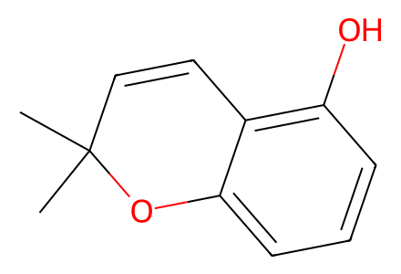
CC1(C)C=Cc2c(O)cccc2O135 个分子记录、26 个制备事件、27 个操作组、3 条路径。覆盖现有 SI 第 2 节制备网络；正文缺失，优化表与失败方案未计入成功路线。产物 18 的部分消旋、二醇 5/7 别名、混合物投料和产率冲突单独保留；仍待独立专家复核。
完整 JSON · 逐步 CSV · 路线序列 · SDF · HRMS 核对
| 事件 | 分子连接 | 报告产率 | Canonical reaction SMILES |
|---|---|---|---|
| E01 | s1 + acetone → s2 | s2: 70% | CC(=O)c1c(O)cccc1O.CC(C)=O>>CC1(C)CC(=O)c2c(O)cccc2O1 |
| E02 | s2 → s3 | not reported | CC1(C)CC(=O)c2c(O)cccc2O1>>CC1(C)C=Cc2c(O)cccc2O1 |
| E03 | s3 → s4 | s4: 98% | CC1(C)C=Cc2c(O)cccc2O1>>COCOc1cccc2c1C=CC(C)(C)O2 |
| E04 | s4 → s5 | s5: 52% | COCOc1cccc2c1C=CC(C)(C)O2>>CC1(C)C=Cc2c(ccc(I)c2O)O1 |
| E05 | 8 → 9 | 9: 63% | Oc1cccc(O)c1>>COCOc1ccc(I)c(OCOC)c1 |
| E06 | 9 + diethyl-malonate → 10 | 10: 87% | CCOC(=O)CC(=O)OCC.COCOc1ccc(I)c(OCOC)c1>>CCOC(=O)C(C(=O)OCC)c1ccc(OCOC)cc1OCOC |
| E07 | 10 → 5 | 5: 80% | CCOC(=O)C(C(=O)OCC)c1ccc(OCOC)cc1OCOC>>COCOc1ccc(C(CO)CO)c(OCOC)c1 |
| E08 | 5 → rac-6 | rac-6: 68% | COCOc1ccc(C(CO)CO)c(OCOC)c1>>COCOc1ccc(C(CO)COC(C)=O)c(OCOC)c1 |
| E09 | 5 + vinyl-acetate → 6 | 6: 78% | C=COC(C)=O.COCOc1ccc(C(CO)CO)c(OCOC)c1>>COCOc1ccc([C@@H](CO)COC(C)=O)c(OCOC)c1 |
| E10 | 6 + s5 → 11 | 11: 80% | CC1(C)C=Cc2c(ccc(I)c2O)O1.COCOc1ccc([C@@H](CO)COC(C)=O)c(OCOC)c1>>COCOc1ccc([C@H](COC(C)=O)COc2c(I)ccc3c2C=CC(C)(C)O3)c(OCOC)c1 |
| E11 | 11 → 12 | 12: 92% | COCOc1ccc([C@H](COC(C)=O)COc2c(I)ccc3c2C=CC(C)(C)O3)c(OCOC)c1>>COCOc1ccc([C@H](CO)COc2c(I)ccc3c2C=CC(C)(C)O3)c(OCOC)c1 |
| E12 | 12 → 3 | 3: 67% | COCOc1ccc([C@H](CO)COc2c(I)ccc3c2C=CC(C)(C)O3)c(OCOC)c1>>COCOc1ccc([C@H](C=O)COc2c(I)ccc3c2C=CC(C)(C)O3)c(OCOC)c1 |
| E13 | 3 → 13a + 13ap | 13a: 28%; 13ap: 22% | COCOc1ccc([C@H](C=O)COc2c(I)ccc3c2C=CC(C)(C)O3)c(OCOC)c1>>COCOc1ccc([C@H]2COc3c(ccc4c3C=CC(C)(C)O4)[C@@H]2O)c(OCOC)c1.COCOc1ccc([C@H]2COc3c(ccc4c3C=CC(C)(C)O4)[C@H]2O)c(OCOC)c1 |
| E14 | 13a + 13ap → 1 | 1: 55% | COCOc1ccc([C@H]2COc3c(ccc4c3C=CC(C)(C)O4)[C@@H]2O)c(OCOC)c1.COCOc1ccc([C@H]2COc3c(ccc4c3C=CC(C)(C)O4)[C@H]2O)c(OCOC)c1>>CC1(C)C=Cc2c(ccc3c2OC[C@H](c2ccc(O)cc2O)C3)O1 |
| E15 | 6 → 14 | 14: 76% | COCOc1ccc([C@@H](CO)COC(C)=O)c(OCOC)c1>>COCOc1ccc([C@H](CO)CO[Si](C)(C)C(C)(C)C)c(OCOC)c1 |
| E16 | 14 + s5 → 15 | 15: 80% | CC1(C)C=Cc2c(ccc(I)c2O)O1.COCOc1ccc([C@H](CO)CO[Si](C)(C)C(C)(C)C)c(OCOC)c1>>COCOc1ccc([C@H](COc2c(I)ccc3c2C=CC(C)(C)O3)CO[Si](C)(C)C(C)(C)C)c(OCOC)c1 |
| E17 | 15 → 16 | 16: 80% | COCOc1ccc([C@H](COc2c(I)ccc3c2C=CC(C)(C)O3)CO[Si](C)(C)C(C)(C)C)c(OCOC)c1>>COCOc1ccc([C@@H](CO)COc2c(I)ccc3c2C=CC(C)(C)O3)c(OCOC)c1 |
| E18 | 16 → 17a + 17ap | 17a: 16%; 17ap: 11% | COCOc1ccc([C@@H](CO)COc2c(I)ccc3c2C=CC(C)(C)O3)c(OCOC)c1>>COCOc1ccc([C@@H]2COc3c(ccc4c3C=CC(C)(C)O4)[C@@H]2O)c(OCOC)c1.COCOc1ccc([C@@H]2COc3c(ccc4c3C=CC(C)(C)O4)[C@H]2O)c(OCOC)c1 |
| E19 | 17a + 17ap → 18 | 18: 65% | COCOc1ccc([C@@H]2COc3c(ccc4c3C=CC(C)(C)O4)[C@@H]2O)c(OCOC)c1.COCOc1ccc([C@@H]2COc3c(ccc4c3C=CC(C)(C)O4)[C@H]2O)c(OCOC)c1>>CC1(C)C=Cc2c(ccc3c2OC[C@@H](c2ccc(O)cc2O)C3)O1 |
| E20 | 6 → 19 | 19: 95% | COCOc1ccc([C@@H](CO)COC(C)=O)c(OCOC)c1>>COCOc1ccc([C@@H](COCOCC[Si](C)(C)C)COC(C)=O)c(OCOC)c1 |
| E21 | 19 → 20 | 20: 75% | COCOc1ccc([C@@H](COCOCC[Si](C)(C)C)COC(C)=O)c(OCOC)c1>>COCOc1ccc([C@H](CO)COCOCC[Si](C)(C)C)c(OCOC)c1 |
| E22 | 20 + s5 → 21 | 21: 73% | CC1(C)C=Cc2c(ccc(I)c2O)O1.COCOc1ccc([C@H](CO)COCOCC[Si](C)(C)C)c(OCOC)c1>>COCOc1ccc([C@@H](COCOCC[Si](C)(C)C)COc2c(I)ccc3c2C=CC(C)(C)O3)c(OCOC)c1 |
| E23 | 21 → 22 | 22: 70% | COCOc1ccc([C@@H](COCOCC[Si](C)(C)C)COc2c(I)ccc3c2C=CC(C)(C)O3)c(OCOC)c1>>COCOc1ccc([C@@H](CO)COc2c(I)ccc3c2C=CC(C)(C)O3)c(OCOC)c1 |
| E24 | 22 → 4 | 4: 67% | COCOc1ccc([C@@H](CO)COc2c(I)ccc3c2C=CC(C)(C)O3)c(OCOC)c1>>COCOc1ccc([C@@H](C=O)COc2c(I)ccc3c2C=CC(C)(C)O3)c(OCOC)c1 |
| E25 | 4 → 23a + 23ap | 23a: 25%; 23ap: 20% | COCOc1ccc([C@@H](C=O)COc2c(I)ccc3c2C=CC(C)(C)O3)c(OCOC)c1>>COCOc1ccc([C@@H]2COc3c(ccc4c3C=CC(C)(C)O4)[C@@H]2O)c(OCOC)c1.COCOc1ccc([C@@H]2COc3c(ccc4c3C=CC(C)(C)O4)[C@H]2O)c(OCOC)c1 |
| E26 | 23a + 23ap → 2 | 2: 54% | COCOc1ccc([C@@H]2COc3c(ccc4c3C=CC(C)(C)O4)[C@@H]2O)c(OCOC)c1.COCOc1ccc([C@@H]2COc3c(ccc4c3C=CC(C)(C)O4)[C@H]2O)c(OCOC)c1>>CC1(C)C=Cc2c(ccc3c2OC[C@@H](c2ccc(O)cc2O)C3)O1 |

CC1(C)C=Cc2c(O)cccc2O1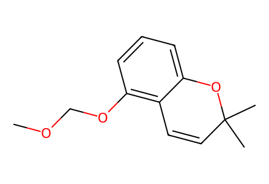
COCOc1cccc2c1C=CC(C)(C)O2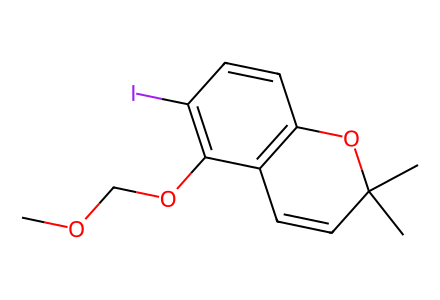
COCOc1c(I)ccc2c1C=CC(C)(C)O2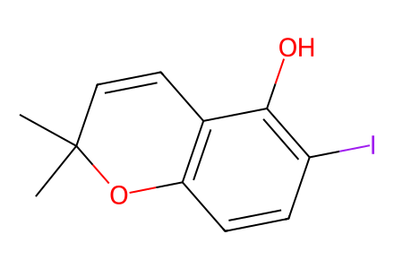
CC1(C)C=Cc2c(ccc(I)c2O)O1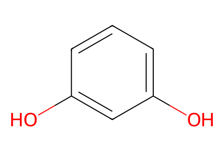
Oc1cccc(O)c1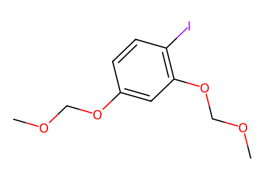
COCOc1ccc(I)c(OCOC)c1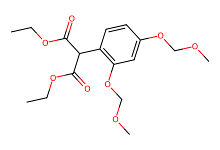
CCOC(=O)C(C(=O)OCC)c1ccc(OCOC)cc1OCOC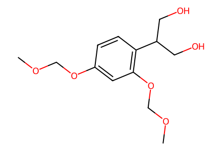
COCOc1ccc(C(CO)CO)c(OCOC)c1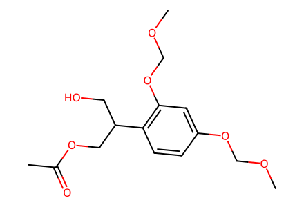
COCOc1ccc(C(CO)COC(C)=O)c(OCOC)c1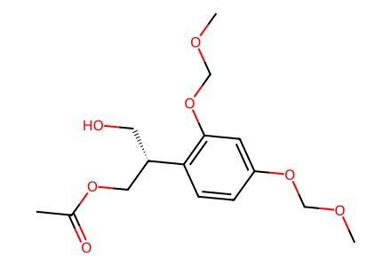
COCOc1ccc([C@@H](CO)COC(C)=O)c(OCOC)c1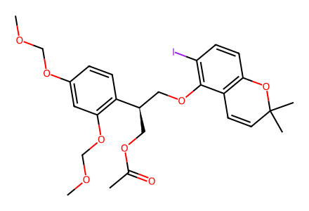
COCOc1ccc([C@H](COC(C)=O)COc2c(I)ccc3c2C=CC(C)(C)O3)c(OCOC)c1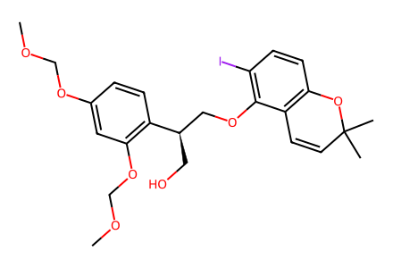
COCOc1ccc([C@H](CO)COc2c(I)ccc3c2C=CC(C)(C)O3)c(OCOC)c1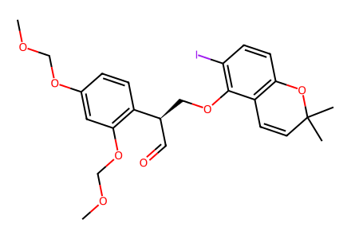
COCOc1ccc([C@H](C=O)COc2c(I)ccc3c2C=CC(C)(C)O3)c(OCOC)c1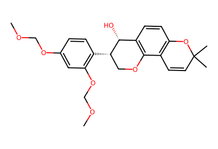
COCOc1ccc([C@H]2COc3c(ccc4c3C=CC(C)(C)O4)[C@H]2O)c(OCOC)c1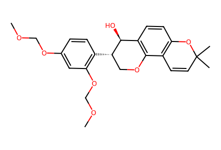
COCOc1ccc([C@H]2COc3c(ccc4c3C=CC(C)(C)O4)[C@@H]2O)c(OCOC)c1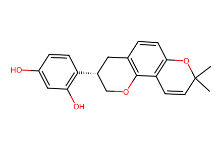
CC1(C)C=Cc2c(ccc3c2OC[C@H](c2ccc(O)cc2O)C3)O1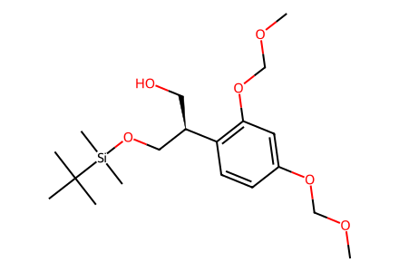
COCOc1ccc([C@H](CO)CO[Si](C)(C)C(C)(C)C)c(OCOC)c1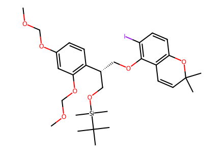
COCOc1ccc([C@H](COc2c(I)ccc3c2C=CC(C)(C)O3)CO[Si](C)(C)C(C)(C)C)c(OCOC)c1
COCOc1ccc([C@@H](CO)COc2c(I)ccc3c2C=CC(C)(C)O3)c(OCOC)c1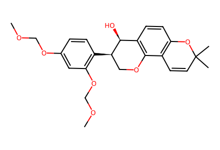
COCOc1ccc([C@@H]2COc3c(ccc4c3C=CC(C)(C)O4)[C@@H]2O)c(OCOC)c1
COCOc1ccc([C@@H]2COc3c(ccc4c3C=CC(C)(C)O4)[C@H]2O)c(OCOC)c1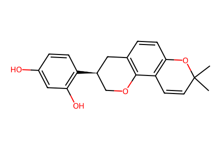
CC1(C)C=Cc2c(ccc3c2OC[C@@H](c2ccc(O)cc2O)C3)O1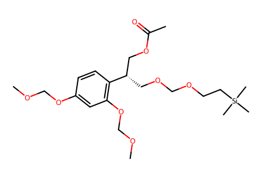
COCOc1ccc([C@@H](COCOCC[Si](C)(C)C)COC(C)=O)c(OCOC)c1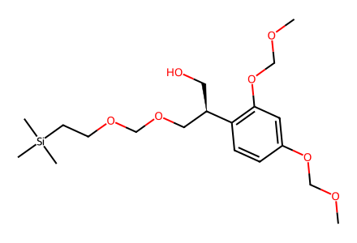
COCOc1ccc([C@H](CO)COCOCC[Si](C)(C)C)c(OCOC)c1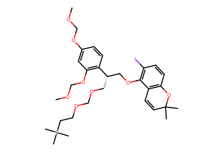
COCOc1ccc([C@@H](COCOCC[Si](C)(C)C)COc2c(I)ccc3c2C=CC(C)(C)O3)c(OCOC)c1COCOc1ccc([C@@H](CO)COc2c(I)ccc3c2C=CC(C)(C)O3)c(OCOC)c1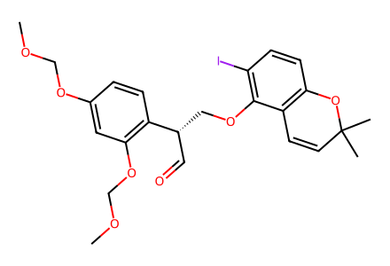
COCOc1ccc([C@@H](C=O)COc2c(I)ccc3c2C=CC(C)(C)O3)c(OCOC)c1
COCOc1ccc([C@@H]2COc3c(ccc4c3C=CC(C)(C)O4)[C@@H]2O)c(OCOC)c1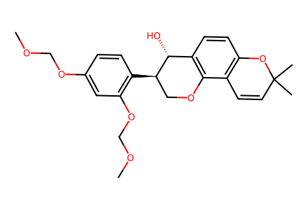
COCOc1ccc([C@@H]2COc3c(ccc4c3C=CC(C)(C)O4)[C@H]2O)c(OCOC)c1
CC1(C)C=Cc2c(ccc3c2OC[C@@H](c2ccc(O)cc2O)C3)O1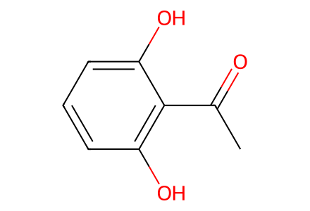
CC(=O)c1c(O)cccc1O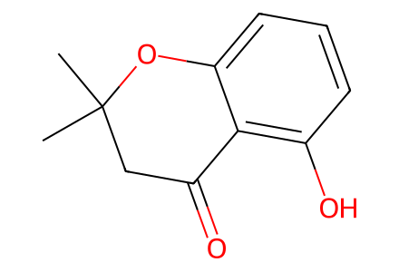
CC1(C)CC(=O)c2c(O)cccc2O1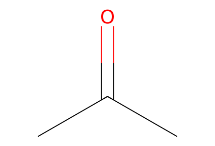
CC(C)=O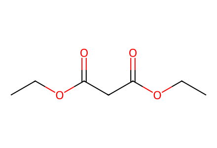
CCOC(=O)CC(=O)OCC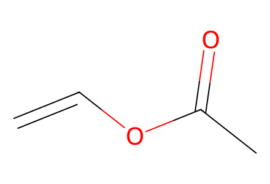
C=COC(C)=O